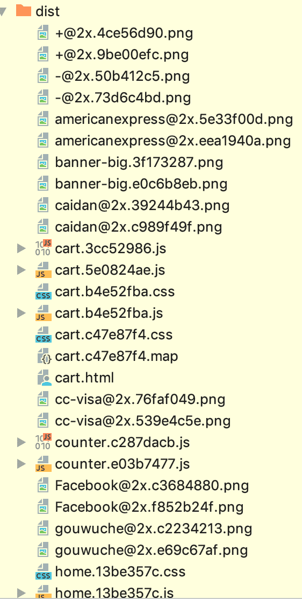

最近需要做一个纯静态网站，因工作量比较少，功能又不复杂，上 webpack 觉得太麻烦了，加上早就对 parcel 种草，所以这次决定试用一下号称零配置的 parcel 。
上手
根据官网文档很快就安装好了。值得点赞的是，在引入 less 文件的时候，parcel 自动检测到了 less，并自动下载了相关编译插件，稍等片刻即可使用。打包速度挺快，HMR 也是挺好用。
深度使用
路径修改
很快定制需求来了，由于 HTML 文件内的相对路径都自动转换成了 dist 下的绝对路径，而我需要能在不启动服务器的情况下，在本地直接打开 index.html 预览。那么就需要将 HTML 内的资源路径都转换成相对路径。查询文档后发现指定 --public-url 即可。
1 | parcel build src/page/index.html --public-url ./ |
postcss 插件引入
由于需要支持响应式，所以进入了 rem 单位，为了省事引入了 postcss-pxtorem 插件，能够自动将 px 转换成 rem。
1 | # postcss.config.js |
深坑
HMR less 修改后不自动加载
在特定的某个页面下，我修改了 less 文件，parcel 在编译后，浏览器并没有刷新样式。
style appearance 无法加上厂商前缀
正常情况下，appearance: none;会被编译成 -webkit-appearance: none;-moz-appearance: none;appearance: none; ，但是 parcel 并没有转换。一开始我以为是 browserslist 的问题，在查询了 autoprefixer 文档后发现，autoprefixer 没问题。所以问题就出在 parcel 上。引入指定 autoprefixer ，覆盖掉 parcel 的 autoprefixer 问题解决。
1 | # postcss.config.js |
打包目录反人类
第一次把项目打包出来后看了下目录，惊了个呆，居然所有文件平铺在 dist 目录下。。。一个合理的目录至少要把 css/img/font 等资源分门别类放在对应文件夹下，在深入了解了下之后，发现居然不能改，还发现了另外一个深坑。

dist 下的文件无法取消 hash
作为演示 demo 页面，我对强缓存没有需求，所以我不需要对我的资源进行 hash 重命名，这样也不够美观。翻了一遍 issue 后发现，由于打包目录的原因，同名文件可能出现在dist下，所以 hash 文件名策略不能取消。好消息是 parcel 2 会通过插件的方式支持命名策略。https://github.com/parcel-bundler/parcel/issues/233#issuecomment-435718097
总结
parcel 作为一个新前端编译工具，带来了零配置的概念，轻度尝鲜很棒。但是作为生产使用的时候，还有不少 bug 和缺点，gulp&webpack 等成熟的插件往往没有对应的文档，目前来讲并不推荐作为生产工具使用。